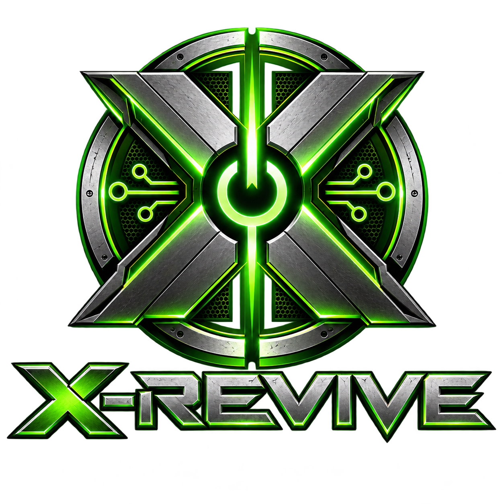

Ligou. Entrou no Xbox.
Inicialização UEFI, ambiente dedicado e dashboard. Sem abrir um desktop para iniciar o Xemu manualmente.
Um projeto para dar uma nova vida ao Xbox Clássico com hardware de PC. Uma experiência dedicada de console, nascida da vontade de preservar um videogame que parecia perdido.

CONSOLE EXPERIENCE / REIMAGINEDUma placa-mãe danificada. Um notebook antigo sem uso. E uma pergunta: e se fosse possível trazer aquele Xbox de volta à vida sem abrir mão da sua identidade?
O Xbox Clássico sempre teve um lugar especial para mim. Sua arquitetura próxima à de um computador despertou uma ideia: substituir o hardware defeituoso por componentes comuns e continuar vivendo a experiência do console.
A solução cresceu. Da recuperação de um único aparelho nasceu o X-Revive: uma iniciativa de preservação, estudo de baixo nível e reaproveitamento de hardware para a comunidade de retrogaming.
Não era apenas fazer um jogo rodar. Era recuperar meu console — e descobrir como ajudar outras pessoas a fazer o mesmo.
WHY WE BUILDO X-Revive transforma um PC compatível em um ambiente dedicado ao Xbox Clássico. Linux minimalista nos bastidores; uma experiência de console na frente da TV.
Inicialização UEFI, ambiente dedicado e dashboard. Sem abrir um desktop para iniciar o Xemu manualmente.
Instalador e operação desenhados para teclado ou controle compatível.
Jogos e aplicativos no ambiente Xbox, com instalação independente em HDD/SSD dedicado.
Base Linux com Mesa e NVIDIA 550 nesta beta; suporte real depende da GPU, CPU e emulação.
Acesso ao modo de manutenção, diagnósticos e ferramentas de suporte via mídia USB.
A beta pública foi pensada para uma instalação orientada, sem exigir compilação. Leia os avisos antes de escolher qualquer disco.
Faça download da beta publicada e confira o SHA256.
Grave a IMG em um pendrive de 16 GB ou maior e inclua seus arquivos Xbox autorizados.
Selecione um HDD/SSD dedicado. A instalação limpa apaga todo o disco escolhido.
Depois da instalação, o disco inicia o ambiente Xbox sem precisar do pendrive.
A beta pública v0.1.0-beta.4 é uma instalação limpa: ela APAGA o HDD/SSD selecionado. Não use seu HDD original de Xbox nesta versão. O modo de preservação de FATX existente permanece experimental e não está incluído nessa release.
A ideia que deu origem ao projeto continua viva: reaproveitar o HDD de um Xbox original, com suas partições FATX, jogos e identidade. A pesquisa de bancada investiga inicialização por USB/RAM e boot UEFI opcional mantendo os dados existentes.
Esse caminho ainda não integra a beta pública. Compatibilidade com discos originais e Xbox físico precisa ser validada por cenário, com backup verificável e testes de integridade.
Conheça a pesquisa de preservação ↗O X-Revive é dedicado ao Xbox original. No futuro, outros projetos independentes poderão seguir a mesma filosofia: um SSD por console, em hardware compatível, com uma experiência própria do momento em que é ligado.
Evoluir a beta, testar mais hardware, refinar a instalação, preservar dados e ampliar a compatibilidade.
XIdeias como PS2-Renew e Wii/GC-Boot são iniciativas futuras e independentes; não são recursos disponíveis nesta beta.
+Pesquisa de longo prazo: firmware livre e novas técnicas de execução e tradução de hardware. Nenhuma garantia de 100% de compatibilidade ou execução nativa de XBE na versão atual.
A imagem pública é a v0.1.0-beta.4 para PC x86-64 com UEFI. Não inclui BIOS, MCPX, EEPROM pessoal, jogos nem arquivos proprietários. Forneça BIOS e MCPX; a EEPROM é opcional e o Xemu a gera quando ausente.
O X-Revive é aberto para estudo, testes, relatos de compatibilidade e contribuições. Se você tem hardware diferente, experiência em Xbox, Linux, emulação ou engenharia reversa, existe espaço para ajudar.